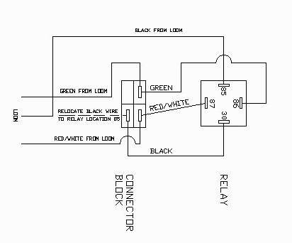
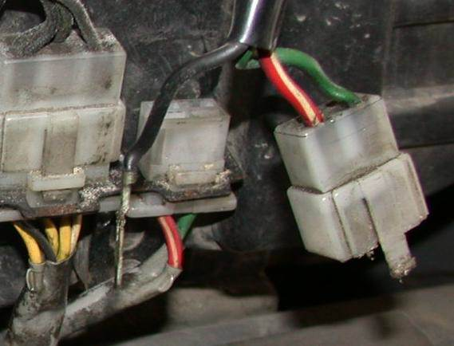
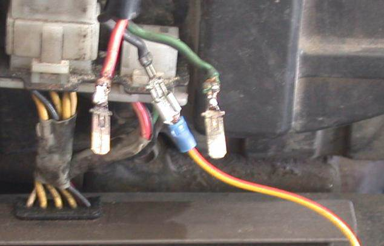
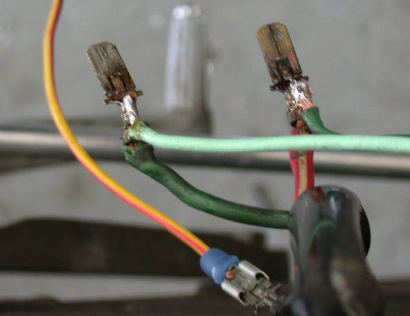
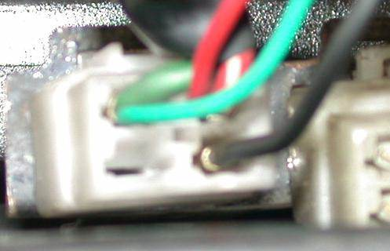
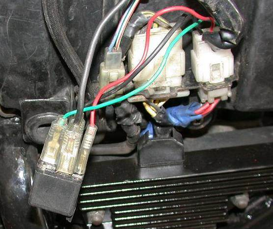

Some CBX750s suffer problems with the electrical system, the voltmeter reads anywhere between 14 and 16 volts, and with the headlights off it nearly always is sitting on 16v and some even with the headlights on. The manual says that anything over 15v indicates an electrical overload.
As far as the group has been able to determine, this problem is due to the regulator incorrectly reading the battery voltage. After going all the way through the loom and back to the regulator, the added resistance of the loom causes the regulator to believe that the battery is 1 volt below the true battery voltage.
This can cause 2 problems. First the battery is constantly being charged and this shortens the life of the battery. Second, fuses blow for no apparent reason or your headlights blow more frequently than they should. My CBX went through 5 in a year.
The solution however is relatively simple. We provide a short-cut so that the regulator sees the correct battery voltage, direct from the battery; rather than the incorrect voltage from the loom. We use a relay to stop the battery being drained by the regulator.
You will require a standard headlight electrical relay , a couple of short pieces of wire (4 × 18” pieces will be fine for under seat installation and 4 × 8” pieces for under side cover installation), a selection of wire connectors, a soldering iron and wire cutters.
For the brave (or those who simply want to see what we’re doing), here’s the schematic diagram:

- Disconnect the battery. (Only the positive lead really needs to be removed)
- Remove the seat and the left hand side cover
- Locate the connector block that is connected to the regulator.
It is the one on the right of the bracket attached to the airbox with only 3 wires going to it.
A Black, Green and a Red/white

- Disconnect the block and remove the black wire as shownabove.
This is a small spade connector and is held into the block by a small tang that comes off the spade itself and can be removed by inserting something sharp into the bottom of the block and depressing the tang, this will allow the removal of the spade. - You need to cut the black wire (this is the only wire that need to be cut) and strip the end of the wire. You need to connect a extension onto this wire and I suggest soldering it rather than one of those crimp connectors as this provides a more permanent and better connection.

In Image 2 you can see we have elected to extend the wire by using connectors rather than cutting and soldering. This was done because we only had my bike as a test and it seemed to work there but when I start working on someone else’s bike I tend not to make assumptions and wanted to be able to reverse the installation completely. The wiring here is from Viking’s bike which was suffering from the 16volt syndrome before we started.

Note the picture displays the black wire connected to a Yellow/Red wire. Really you should not do this, try to use the same color wiring.
- Remove the Red/white and Green wire from the block also as displayed in Image 2. We need to connect a wire to each of these that will run to the relay.
This is how we connected them again so that the project was reversible, If you connect the extensions as seen here the spades will go back into the block without any problems. Connect a female spade connector to the end of each of these wires.
The image here was taken from above the bike, looking down at the wires, so the orientation of the wires may appear slightly strange. - Assemble the final piece of wire that you have with a male spade connector on one end and a female connector on the other.

- Reassemble the block .
Pay attention to the color of the wires on the regulator side of the connecting block as these need to match the colors of the wires in the top block
Do not connect the black wire to the block as this will go to the relay.
That spare wire you have goes into the block in place of the black wire. - Connect the extension wire from the Green lead on the block to pin 86 on the relay.

Connect the extension wire from the Red lead on the block to pin 87 on the relay.
Connect the Black lead from the loom to pin 85 on the relay.
Connect the new piece of wire to where the black wire was on the connector block and to pin 30 on the relay.
This is an image of a completed assembly using all the right colored wires.

Just to show you that we can do it the right way.
This unit was mounted under the Side Cover.
Here you can see that Viking elected to have his under the seat.
List member Alan has come up with an interesting solution to the problem – rewire the bike! Or at least parts of it. I won’t bore you with the details, but by adding larger wires and additional ground paths, Alan has solved the problems he was having with low voltages and bad grounds. View the details here in his write-up (28KByte Adobe Acrobat file).